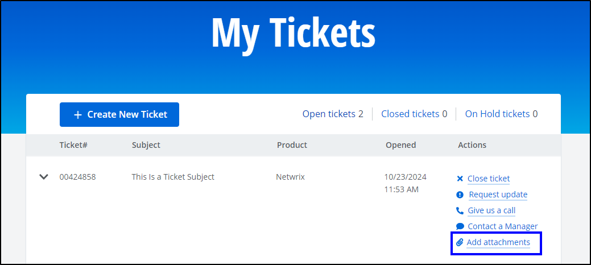
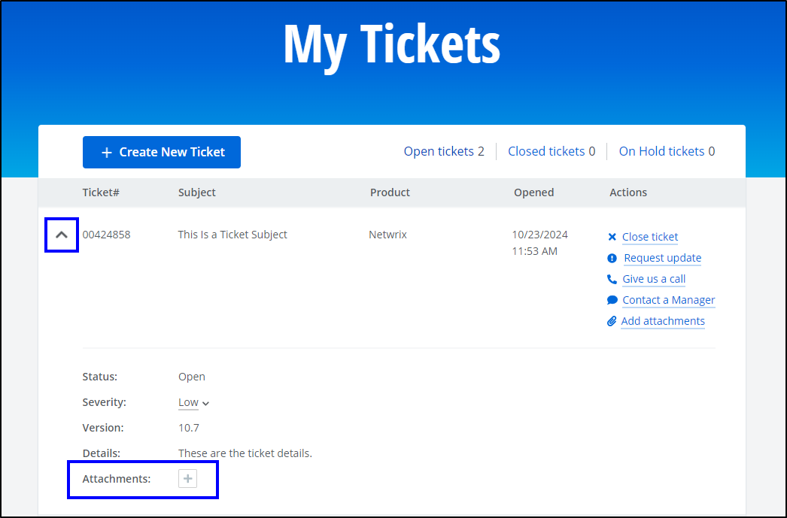

Question
-
What logs might be requested by Netwrix Technical Support?
-
How can you upload Netwrix Auditor logs to a support ticket?
Answer
Technical Support checklist
Netwrix Technical Support might request a collection of your Netwrix Auditor logs for troubleshooting purposes. Make sure you gather the following items to help your Technical Support Engineer resolve your issue.
-
Netwrix Auditor System Health event log. Refer to the following article for additional information on exporting the System Health event log: How to Save and Zip Netwrix Auditor System Health Event Log.
-
Netwrix Auditor configuration files. Navigate to
%Working Folder%\AuditCore\ConfigServerand copy the ConfigServer folder. The default location of the ConfigServer folder isC:\ProgramData\Netwrix Auditor\AuditCore\ConfigServer. -
Trace logs. If requested, navigate to
%Working Folder%\Netwrix Auditor\Logs, and copy the required folder(s).NOTE: Your Technical Support Engineer will request a specific subdirectory of the Logs folder. Please do not send the entire Logs folder unless requested.
NOTE: If you are unable to locate Working Folder, refer to the following options to perform in your Auditor server to establish the folder location:
Run the following line in Command Prompt in your Auditor server to get the value of the
DataPathOverridesubkey entry. The output will contain the location of Working Folder in your Auditor server:reg query "HKEY_LOCAL_MACHINE\SOFTWARE\WOW6432Node\Netwrix Auditor\DataPathOverride"Run the following line in PowerShell in your Auditor server to get the value of the
DataPathOverridesubkey entry. The output will contain the location of Working Folder in your Netwrix Auditor server:Get-ItemPropertyValue -Path "HKLM:\SOFTWARE\WOW6432Node\Netwrix Auditor\DataPathOverride" -Name "(Default)"Review the string entry under the following registry subnode in your Netwrix Auditor server. The Value Data field contains the location of Working Folder:
Computer\HKEY_LOCAL_MACHINE\SOFTWARE\WOW6432Node\Netwrix Auditor\DataPathOverride
Uploading the logs
-
Once you have located all the required logs, copy them to a single folder and compress it by right-clicking the folder and selecting Send to > Compressed (zipped) folder.
-
Log in to the Customer Portal and attach the archived logs to the opened ticket. Use the following link to open the Open tickets page: My Tickets — Open Tickets.
NOTE: Once you have opened the Open Tickets page and identified the corresponding ticket (with a matching ticket #), you can attach the logs via one of the following ways:
Click the Add attachments button located under the Actions column of the ticket.
Expand the ticket details by clicking the down carat (▼) button and click the plus (+) button next to Attachments.
